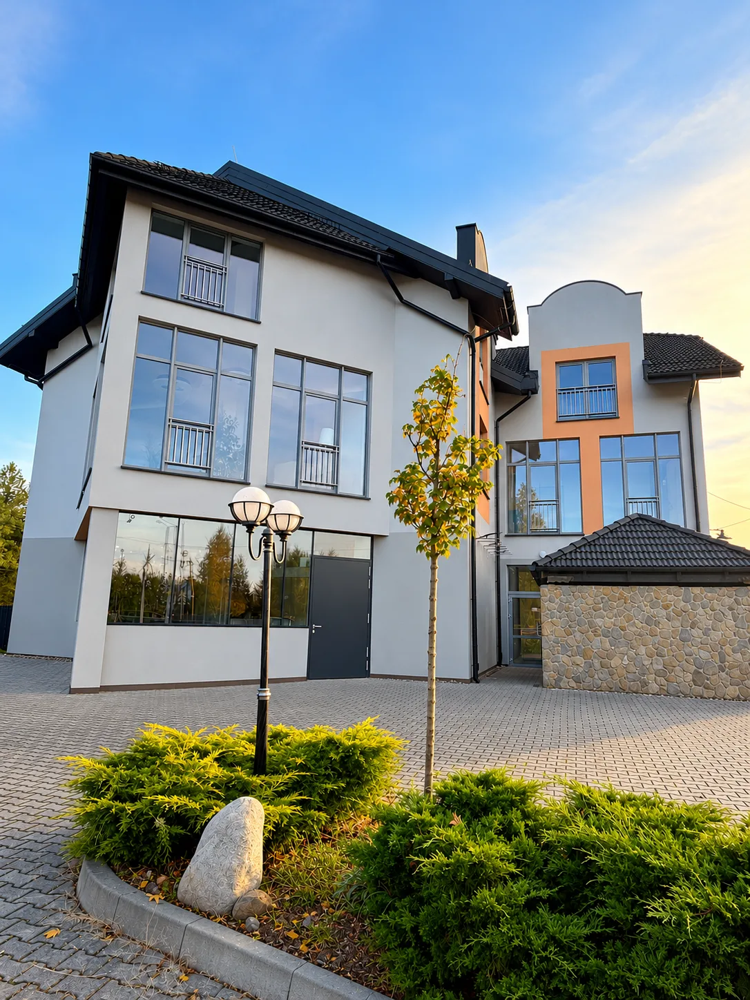

Dobre życie nie ma wieku
Martwisz się, że mama lub tata spędzają całe dnie sami w domu?
Miejsce stworzone z myślą o Seniorach
„Pomarańczę” tworzymy z myślą o Osobach, które chcą żyć aktywnie, po swojemu i wśród życzliwych ludzi – oraz o ich rodzinach, którym zależy, by bliska osoba była bezpieczna i zadbana. Dlatego w jednym miejscu w Sterkowcu łączymy trzy formy wsparcia, z których można korzystać osobno lub razem.
W Dziennym Domu Seniora dzień mija na rozmowach, zajęciach i wspólnym posiłku, a po południu wraca się do siebie. Mieszkania dla seniorów dają własną przestrzeń bez barier i ludzi obok, kiedy ma się ochotę na towarzystwo. Rehabilitacja pomaga zachować sprawność – w ramach pobytu w Dziennym Domu lub jako osobna usługa.
Dzienny Dom Seniora
Opieka, ciepły posiłek i zajęcia od poniedziałku do piątku – w gronie życzliwych ludzi.
Poznaj Dzienny Dom →Mieszkania dla seniorów
Własna przestrzeń bez barier, a obok wspólne miejsca i towarzystwo, kiedy masz na nie ochotę.
Zobacz mieszkania →Rehabilitacja
Fizjoterapia w ramach pobytu w Dziennym Domu Seniora lub jako osobna usługa.
Dowiedz się więcej →Zapraszamy do Pomarańczy
Centrum Seniora Pomarańcza mieści się przy ul. Sosnowej 83 w Sterkowcu. Jasne wnętrza, duże okna i spokojna okolica sprzyjają odpoczynkowi, zajęciom i spotkaniom.
Jesteśmy otwarci od poniedziałku do piątku w godzinach 8:00–16:00.
Jak do nas trafić
Wsparcie dla Seniora i spokój dla rodziny
Dla Seniora
- Bezpieczny i przewidywalny dzień w gronie znajomych osób
- Aktywność, terapia i rozwój – na tyle, na ile jest ochota
- Towarzystwo i rozmowa, które przeciwdziałają samotności
- Poczucie, że wciąż jest się ważną częścią społeczności
Dla Rodziny
- Spokój i pewność, że bliska osoba jest w dobrych rękach
- Czas na pracę, odpoczynek i własne obowiązki
- Stały kontakt i informacja o tym, jak minął dzień
- Wsparcie w codziennych, często niełatwych decyzjach